Architekture & Industrial
View As Unframed Images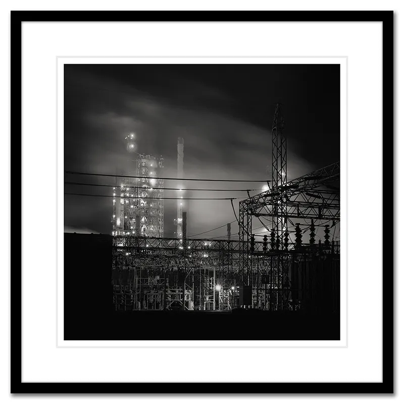
Refinery
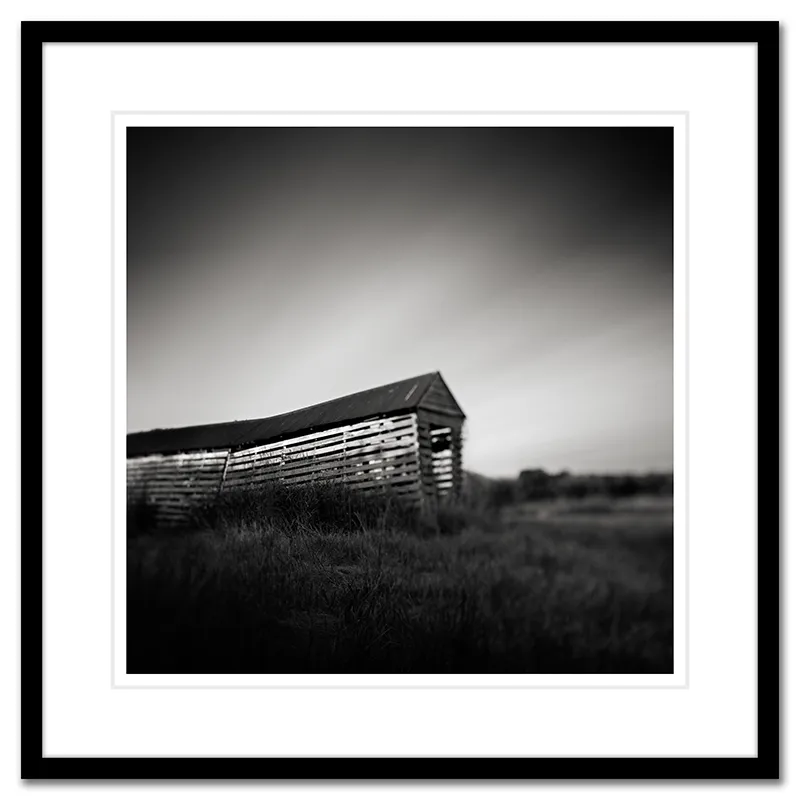
Bridgeville
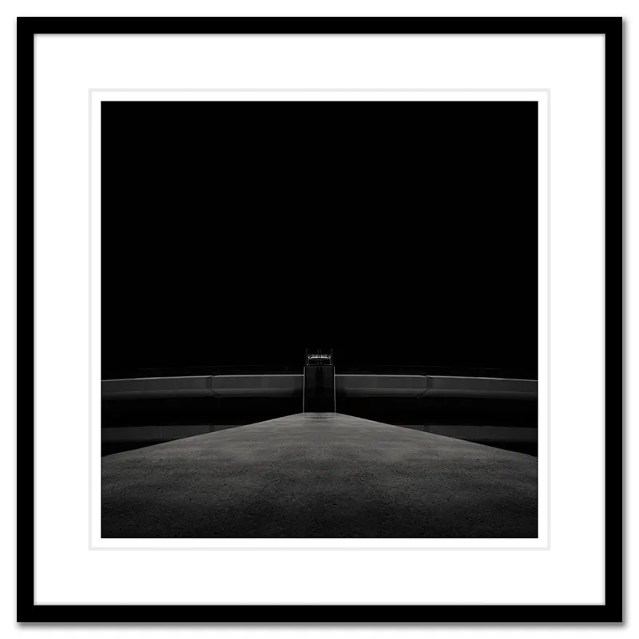
Flux
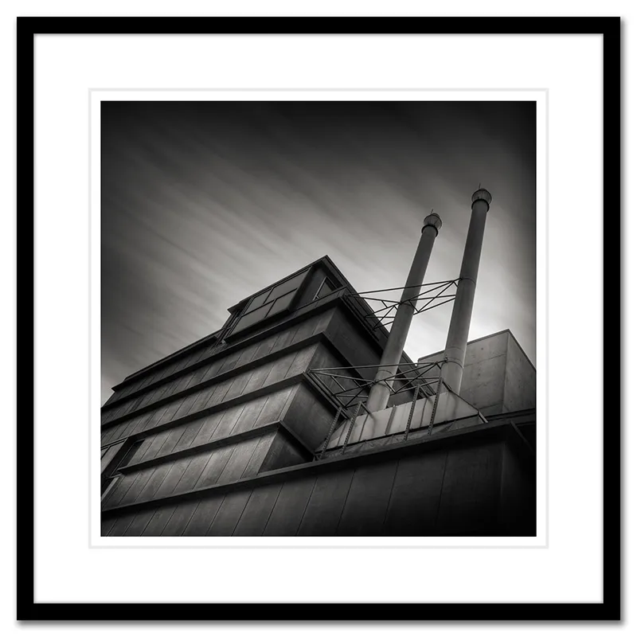
Architektura II
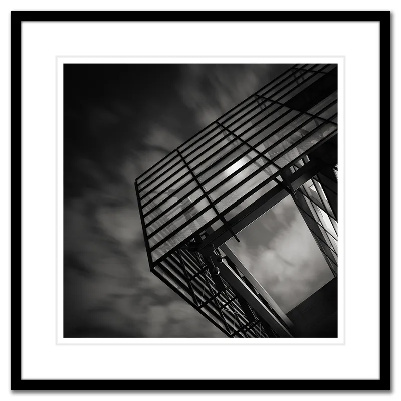
Architektura I
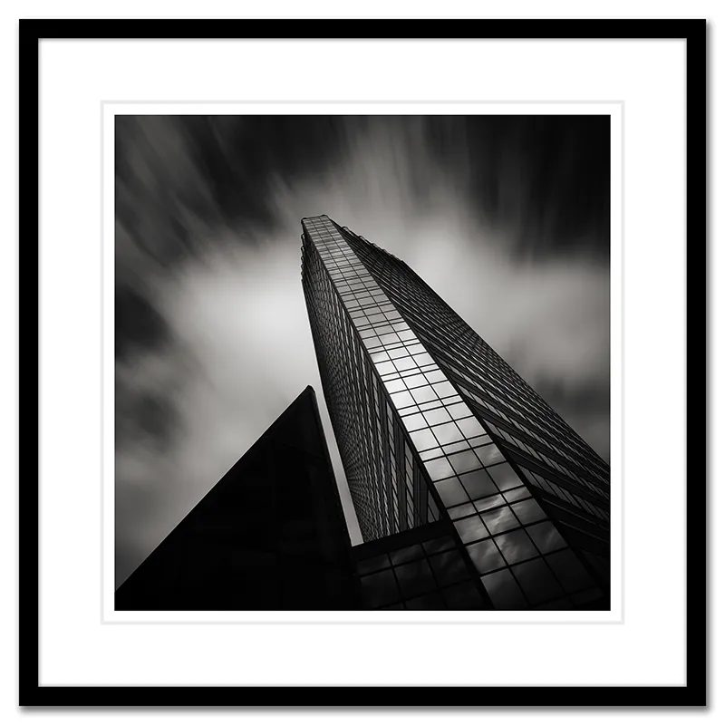
Architektura III
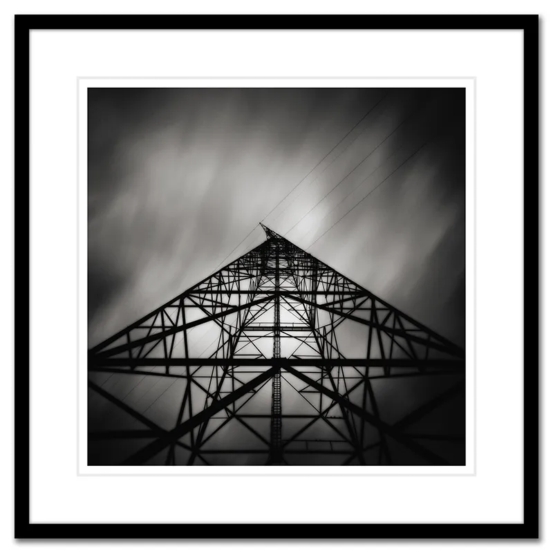
Transmission Grid
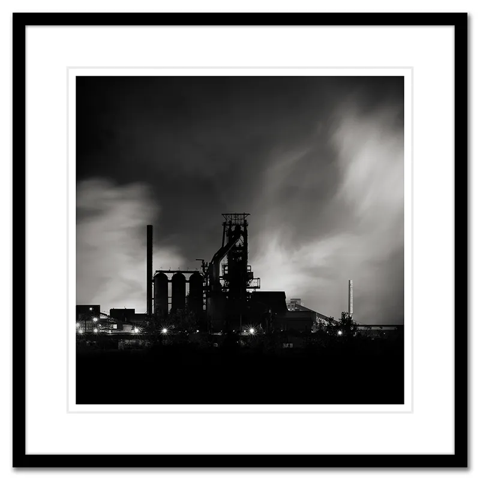
Zug Island: Study II
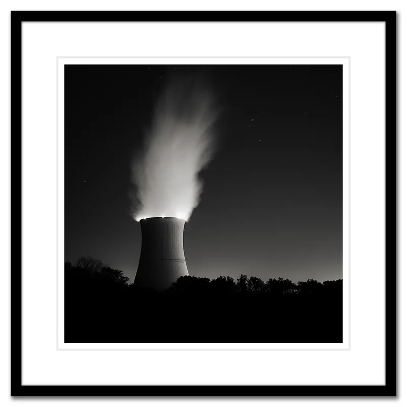
Davis-Besse
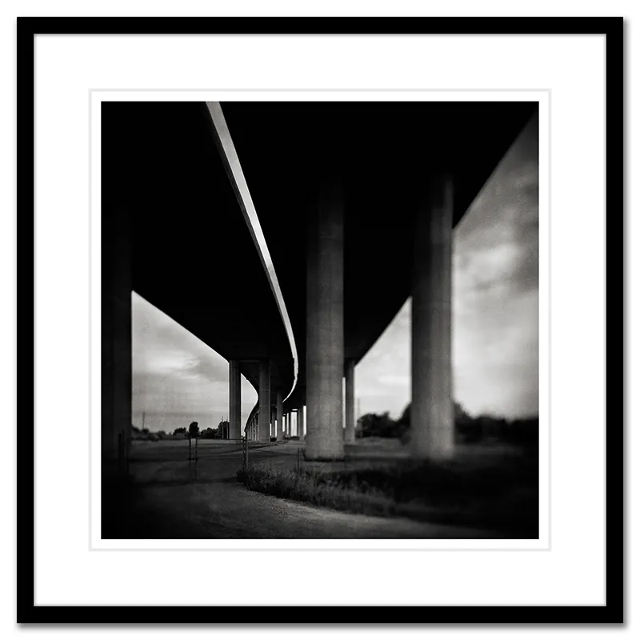
The Zilwaukee
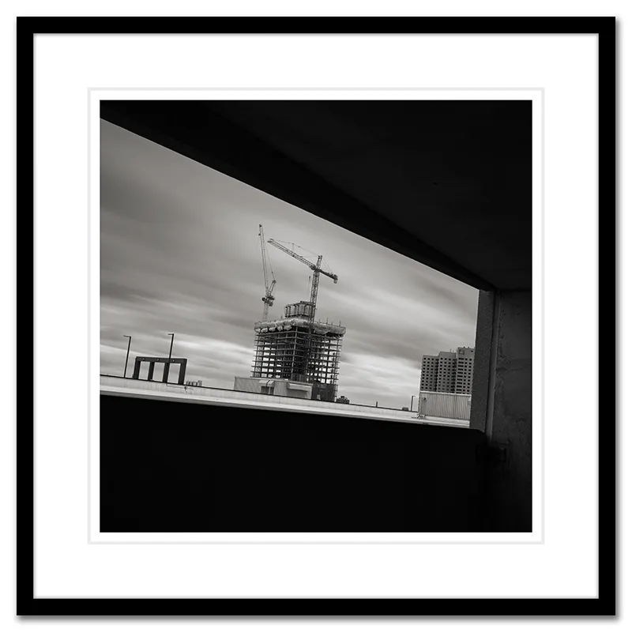
Crane Construction
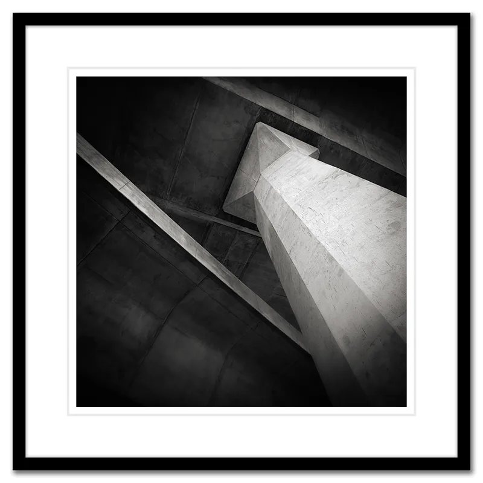
Under The Glass City Skyway
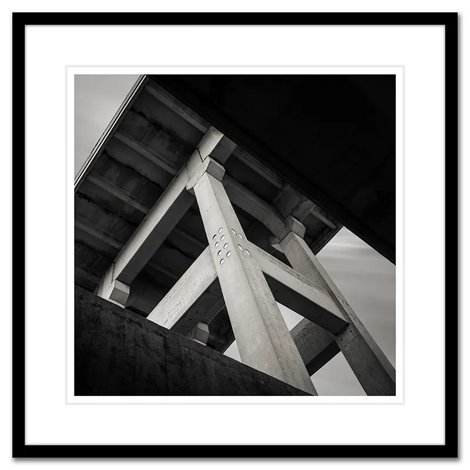
Overpass